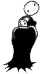

<!DOCTYPE html>
<html lang="en">

<head>
    <meta charset="UTF-8">
    <meta name="viewport" content="width=device-width, initial-scale=1.0">
    <title>Document</title>
    <link rel="stylesheet" href="./style.css">
</head>

<body>
    <aside>
        <!-- <span>Бесшумный бег</span>
        <span>Больше критических </span>
        <span>Бонус движения</span>
        <span>Бонус рукопашного урона</span>
        <span>Бонус рукопашной атаки</span>
        <span>Бонус скорострельности</span>
        <span>Бонус урона на расстоянии</span>
        <span>Быстрая реакция</span>
        <span>Быстрое восстановление</span>
        <span>Быстрый доступ</span>
        <span>Великий вор</span>
        <span>Великий торговец</span>
        <span>Вёрткость</span>
        <span>Внушительность</span>
        <span>Говорун</span>
        <span>Дитя цветов</span>
        <span>Друг животных</span>
        <span>Живчик</span>
        <span>Таинственный незнакомец</span>
        <span>Змееедство</span>
        <span>Фонтан жизни</span>
        <span>Карманник</span>
        <span>Кладоискатель</span>
        <span>Кошачий глаз</span>
        <span>Крепкий хребет</span>
        <span>Культ личности</span>
        <span>Мастер выживания</span>
        <span>Мастер на все руки</span>
        <span>Медик</span>
        <span>Меткий стрелок</span>
        <span>Мутация</span>
        <span>Наблюдательность</span>
        <span>Непробиваемость</span>
        <span>Образованный</span>
        <span>Оратор</span>
        <span>Первопроходец</span>
        <span>Приз</span>
        <span>Прилежный ученик</span>
        <span>Исследователь</span>
        <span>Размах</span>
        <span>Рад-сопротивление</span>
        <span>Скаут</span>
        <span>Следопыт</span>
        <span>Смертельный удар</span>
        <span>Снайпер</span>
        <span>Стойкий разум</span>
        <span>Тихая смерть</span>
        <span>Критический урон</span>
        <span>Халявщик</span>
        <span>Целитель</span>
        <span>Эмпатия</span> -->

    </aside>
    <main>
        <!-- <h1>Бесшумный бег</h1>
        <div>
            <section>
                <p>Эта способность позволяет вам красться и одновременно бежать. Без неё вы автоматически перестаёте
                    красться, когда переходите на бег.</p>
                <span>Требования:Уровень 6, ЛВ 6, Свкрытность 50</span>
            </section>
            

        </div> -->
    </main>
    <script src="./script.js">
        </script>
</body>

</html>